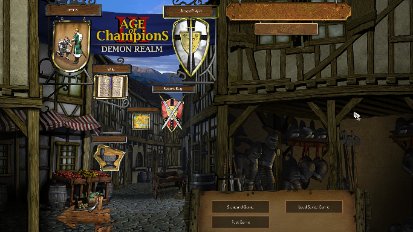

Contribution
Main Menu:
Initial screen with few buttons that show the options available to the player, options such as a Tutorial, Wiki (link to developers Github), Exit, Report Bug and Single Player. Single Player Button will display 3 more buttons (Standard Game, Load Saved Game and Fast Game). Load Games, Tutorial and Wiki Links have been done in collaboration with Ferran Martín

Player:
In-Game Hud: Base Module for Player information Display and Entities Managment. It coordinates all game options and split their functionality into 4 submodules: Game Panel, Action Panel, Selection Panel and Minimap.

Game Panel:
Manage global match information such as resources, population, win/lose conditions and pause menu options. It's shown in the top of the screen as a information bar, in the top left corner it shows own resources and population available, on the top right corner there's the Pause Menu Button with game options (quit game, save, load and cancel).
Action Panel:
Manage Units and Buildings actions such as spawn units, research technologies, use skills and skill tree (champions), build buildings (villagers), upgrade civilization or even kill selected unit. Every action available have text information displayed when hovering the button. It interacts with Game Panel to manage resources and Selection Panel to Update Units state.
Selection Panel:
This sub-module includes up to five methods to select entities (click, double click, click and drag, ctrl + click, ctrl + click + drag), showing selected entities grop or single profile information, buildings production queue, also allows actions such as move, attack, heal or collect resources. It is the backbone that allows the player to interact with the map and the entities in it. Move, attack, heal and collect resources have been done in collaboration with Joan Pareja and Andreu Rojas
Minimap:
Submodule that prints basic map information, blue marks are own units/buildings and red are enemies ones, fog of war updates acording to map state. Player can interact with it and move the camera or even move units to one place or another, it also have shortcuts to champions in the top right of the minimap. When under attack an alert apear and point the battle position, the current camera position is also shown with a rectangle on the minimap.
Player and AI Save & Load:
Save/Load current game information and update submodules if player chose to load game.
Entities Information Managment:
Player and AI storage of information related to units, buildings, tecnologies and skills pluss system to use it. Player and AI Data containers are different but they may contain: unit/building/resource types, base types which is the origin of the entity (militia base type from Longswordman), produced from (needed to porduce unit/building/tecnology), tecnology type that will update it, age and lvl where they are available, resources and population cost and short description of element shown as help for the player.
Entities Life Bar:
If you select an entity it shows current life life over it, if a group of units selected all your life bars are displayed .
Civilization Upgrades:
Technologies Research system, manage research and every time a research is complete it upgrade everything in need. This might change civilizations age and it's consequent change of buildings stats, sprites and actions available. Some research affect units or buffs applied to them.
Units Upgrades:
Doing Research, units can be upgraded to a higher level, a militia evolve to man-at-arms and so on. This type of update need to iterate all current units and units inside production queue to update them to their next level. If units that evolve are Allies Action Panels must be updated too.
AI Civilization Upgrade:
Artificial inteligence improve their tecnology and does research as if it was a player. AI research system evolve current civilization within it's possibilities and manage the resources avaiable to develop them. Also if next technology to research need a production type (Stable) and there's no stable, it'll search for a villager to build it and then start the research.
AI Buildings Managment:
Buildings production tools, have been done in collaboration with Joan Pareja, Joan Pareja did the building managment, which base building type should be build next. I did the tools to build them, find villager or create one, spend resources if there're enough to build, find place for the building, build correct level of building, increase max population with houses...
AI Units Production Managment:
Units production tools, have been done in collaboration with Joan Pareja, Joan pareja did the units managment, which base unit type should be created, militia for example. I did the tools to create them, find building where they spawn, build one if there isn't any of the same type, spend recources, increase population and so on.
Win & Lose Contitions:
Whenever the conditions are fulfilled the game ends and Win/Lose screen popup showing the result of the game, the amount of enemy and allies units killed.